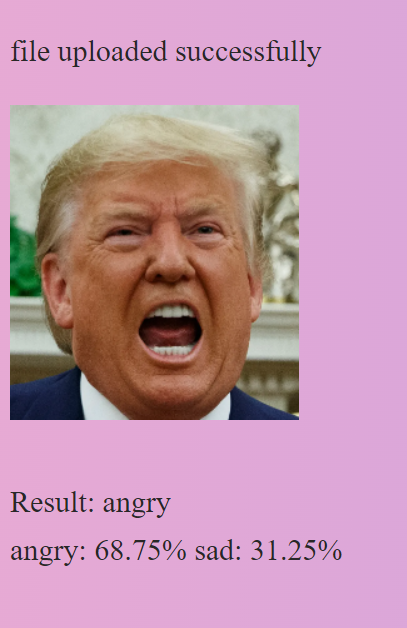

# when we try to access url http://127.0.0.1:5000/, then run this method
@app.route('/')
def upload_file():
return render_template('upload.html')
# when we try to access url http://127.0.0.1:5000/uploader/, then run this method
@app.route('/uploader', methods = ['GET', 'POST'])
def get_upload_file():
# request the file that the user uploaded and save in static folder
if request.method == 'POST':
f = request.files['file']
f.filename="./static/"+f.filename
f.save(f.filename)
img = Image.open(f.filename)
img = img.convert('RGB')
img = transforms.Grayscale(num_output_channels=3)(img)
img = transforms.Resize((128, 128))(img)
img = transforms.ToTensor()(img)
img = transforms.Normalize(mean=[0.485,0.456,0.406], std=[0.229,0.224,0.225])(img)
pred_fraction = None
pred_label = None
model.eval()
with torch.no_grad():
logit = model(torch.tensor(np.expand_dims(img,axis=0)).to(device)).detach().cpu().numpy()
logit = np.maximum(logit, 0) # relu
pred_fraction = logit / np.sum(logit) # normalize
pred_label = np.argmax(logit)
invTrans = transforms.Compose([ transforms.Normalize(mean = [ 0., 0., 0. ], std = [ 1/0.229, 1/0.224, 1/0.225 ]),
transforms.Normalize(mean = [ -0.485, -0.456, -0.406 ], std = [ 1., 1., 1. ]) ])
image = invTrans(img)
image = np.moveaxis(image.numpy(), 0, -1)
frac = pred_fraction[0]
sorted_id = np.flip(np.argsort(frac))
valid_id = frac[sorted_id]!=0 # excluding zero fractions
sorted_id = sorted_id[valid_id] # id of sorted fractions, big to small
xlab = ""
for id in sorted_id:
xlab += list(class2label.keys())[id]
xlab += ': '
xlab += str(np.round(pred_fraction[0][id]*100,2))
xlab += "%\n"
return render_template('uploader.html', img=f.filename,result=xlab,predict=label2class[pred_label])Project (Lei part)
Project
1 Functions that Renders HTML Files
We also applied the model to a webpage and here’s a demo showing how to use the facial expression detection webpage.
The code snippet contains a function upload_file that renders the upload.html and another function get_upload_file that renders the uploader.html.
2 Submit Page
The following code is from the upload.html. The upload template has buttons for uploading a photo and submitting the photo.
<html>
# link to the css file
<link rel="stylesheet" type="text/css" href= {{ url_for("static",filename="mystyle.css") }} >
<body>
<h1>Upload your face image here!</h1>
<br><br>
<form action = "/uploader" method = "POST"
enctype = "multipart/form-data">
<input type = "file" name = "file" />
<input type = "submit"/>
</form>
<br>
</body>
</html>It should give you a page like this. After clicking the Choose File and select a face image from your computer, you can click Submit button and it leads you to the uploader page. The user should crop the image to make sure it’s a human face in the center of the picture before uploading.
3 Result Page
The following code is from the uploader.html. The uploader template shows the image you uploaded and the percentage of all possible emotions the model detects. It also gives a facial expression prediction result, which is the emotion with the highest percentage.
<!DOCTYPE html>
<link rel="stylesheet" type="text/css" href= {{ url_for("static",filename="mystyle.css") }} >
<html lang="en">
<head>
</head>
<p>file uploaded successfully</p>
<body>
<img src={{img}} alt="User Upload Picture">
</body>
<br><br>
<p>
Result:
{{predict}}
<br>
{{result}}
</p>
</html>For example, if we choose an angry Trump face image and submit, we will get a page like this!
